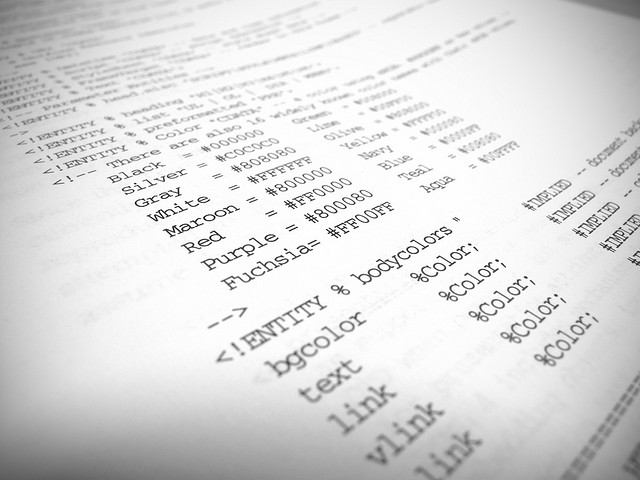

Descubriendo HTML5
Definicion : actualmente es un lenguaje de programacion que se utiliza para el desarrollo de paginas de internet se trata de las siglas, HyperText markup Language, es decir lenguaje de Marcas de Hipertexto.
este lenguje funciona por medio de etiquetas que son las que generan el conjuntos de sentencias para ejecucion

ETIQUETAS MAS USADAS
Código :
<!DOCTYPE html>
Es un DOCTYPE mucho más simplificado que XHTML (cuyas reglas siguen siendo usadas) y te permite usar todas las habilidades de HTML5 sin que nada de lo que ya tienes programado deje de funcionar.
Las principales etiquetas HTML5 nuevas no tienen una representación especial en pantalla. Todas se comportan como un <div> o un <span>. Pero cada una tiene un significado semántico superior a un simple div o span.
<header>
Hacer cosas como <div id="header"> es un poco estúpido cuando el 99% de los proyectos web tienen una cabecera. <header> está diseñada para reemplazar la necesidad de crear divs sin significado semántico.
<hgroup>
Muchos headers necesitan múltiples títulos, como un blog que tiene un titulo y un tagline explicando el blog. <hgroup> permite colocar un h1, h2 y h3 dentro del header sin afectar el SEO, permitiendo usar otro h1 en el sitio.
En el HTML actual, sólo puedes usar h1 una vez por sitio o el h1 pierde prioridad de SEO.
<nav>
Igual que <header>, <nav> está diseñado para que ahí coloques la botonera de navegación principal. Puedes colocar cualquier etiqueta dentro, aunque lo recomendado es usar listas <ul>. Sólo puedes tener un <nav> por página.
<section>
Define un área de contenido única dentro del sitio. En un blog, sería la zona donde están todos los posts. En un video de youtube, habría un section para el video, uno para los datos del video, otro para la zona de comentarios.
<article>
Define zonas únicas de contenido independiente. En el home de un blog, cada post sería un article. En un post del blog, el post y cada uno de sus comentarios sería un <article>.
<aside>
Cualquier contenido que no esté relacionado con el objetivo primario de la página va en un aside. En un blog, obviamente el aside es la barra lateral de información. En el home de un periódico, puede ser el área de indicadores económicos.
<footer>
Esta seccion indica el pie de pagina del documento HTML o pagina web.
{kind=link}
{kind=link}
{kind=link}
{kind=link}
{kind=link}